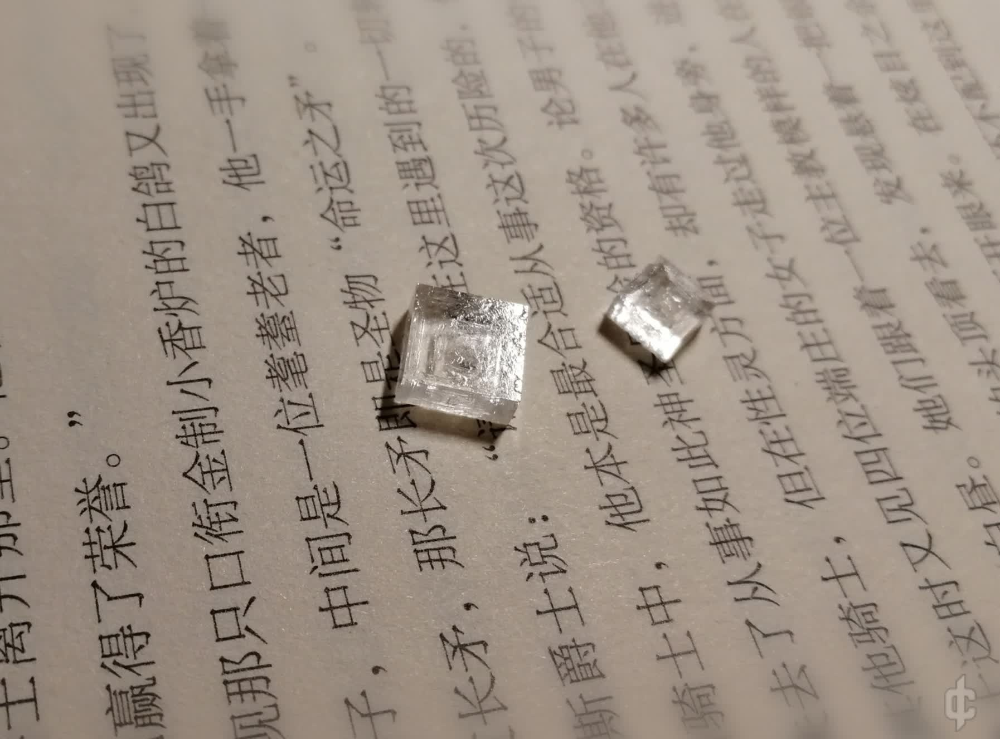
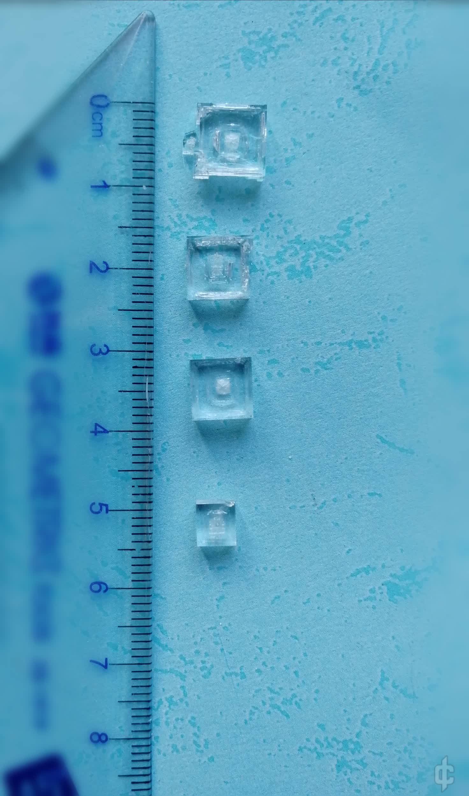
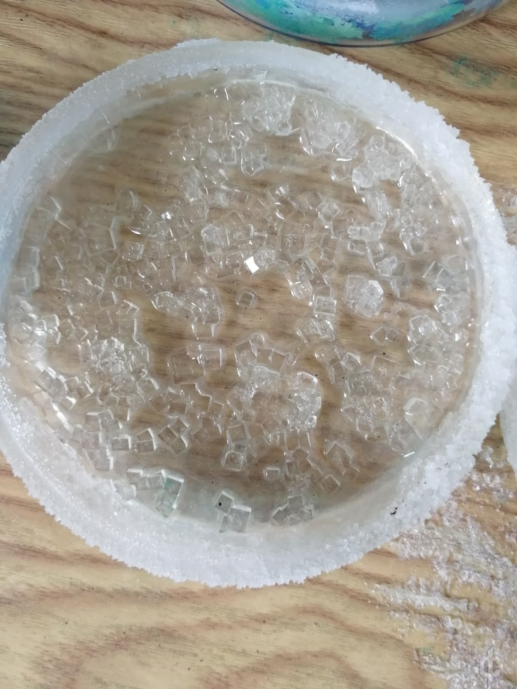
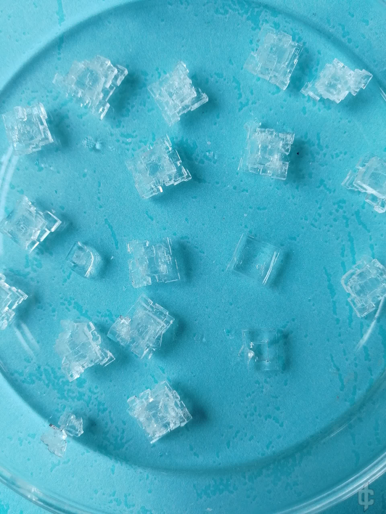
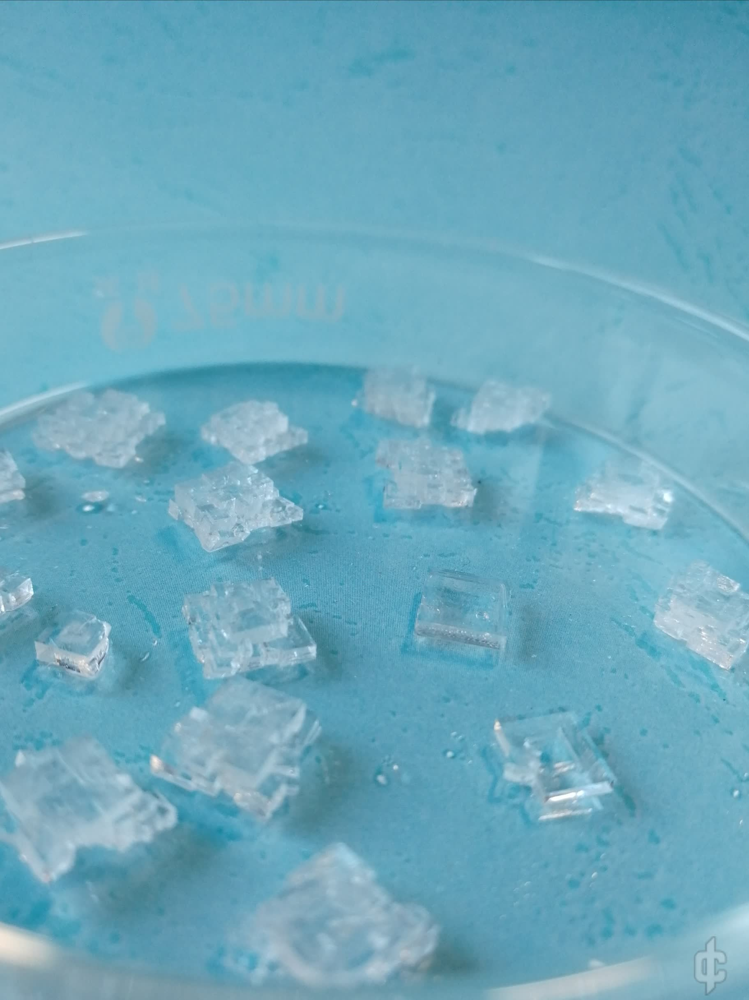
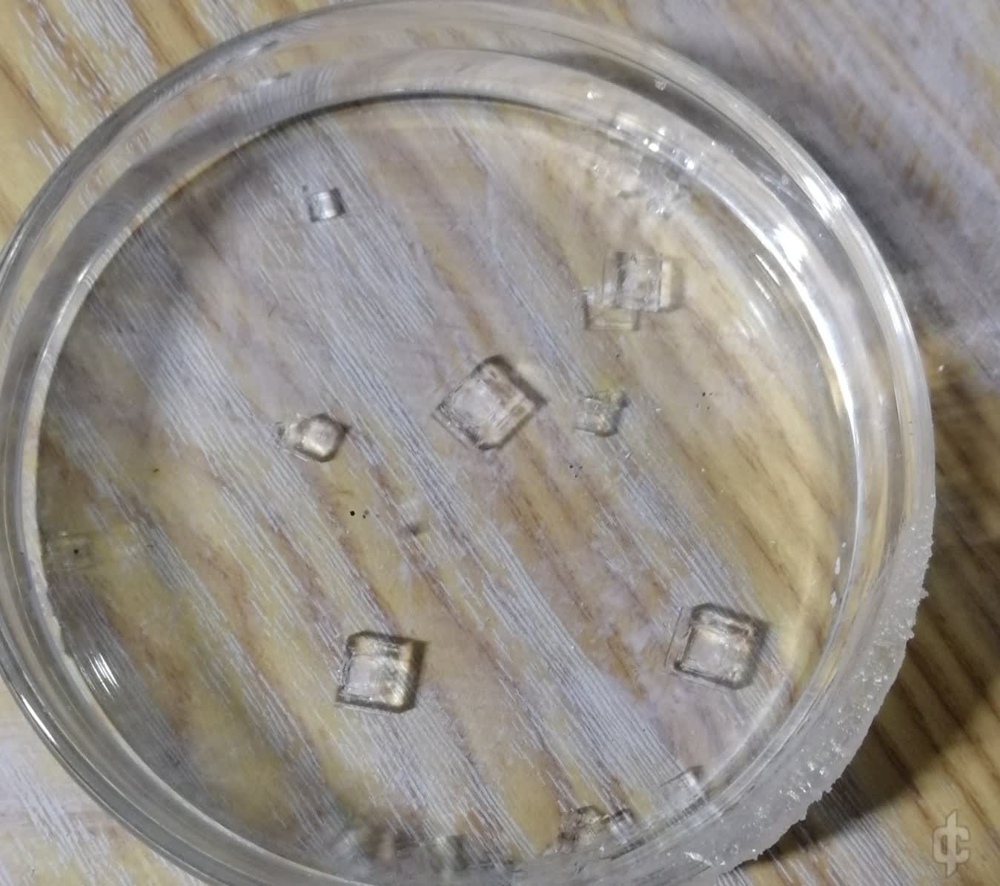
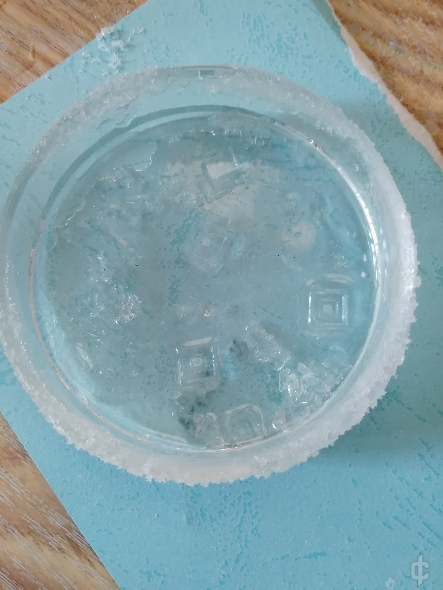

先上图：

方形的结晶与透明的身体
真的不是氯化钠…

培养氯化钾晶体…个人感觉不算难，只是似乎有一些奇怪的性质容易让人走弯路
培养过程
1.配置饱和氯化钾溶液
查询氯化钾溶解度表，配置常温下的饱和溶液。这里个人选择以40℃时的溶解度为标准加入氯化钾，溶解时不断搅拌，最后静置约10min，让氯化钾充分溶解（静置后最好观察一下底部是否有氯化钾晶体剩余，保证溶液是饱和的）
2.培养晶核
氯化钾溶解度曲线较为平稳，所以常温自然蒸发析晶比较合适。这里个人是直接将溶液转移到培养皿里，不加盖放一周（还是两周…总之放了很久），最后效果…

非常可怕…
然后很开心的挑出来一堆小方块，准备像养硫酸铜晶体那样，将晶核转移到另外的氯化钾饱和溶液中，自然蒸发…最后就可以结出大大的晶体了…
然而…
3.培养晶体
如下图，以“硫酸铜晶体培养法”培养的氯化钾晶体

大多数小方块氯化钾晶核长成了一堆四棱柱组成的奇怪形状，甚至有点中心对称的感觉，只有两个理想形状的氯化钾晶体（我不确定那两个正常形状的氯化钾晶体是否为晶核长成的）
这太怪了
刚开始我认为是杂质或者震动的关系…但反复做了几次之后，仍然没有稳定结出方方正正的大块氯化钾晶体…

如上图，奇怪的氯化钾晶体（其实还挺好看的）
结晶失败几次后，我觉得方法可能有问题…既然挑出晶核的操作本身容易使晶核沾染灰尘，风化之类 导致结晶失败，那我就不挑出晶核，而是改为挑出晶核周围的碎晶，腾出空间，让晶核在最初的培养皿里生长。这样子晶体应该就不容易长歪了吧…
于是，改进方法是这样的
先按照之前的晶核培养法培养晶核，不过这次最好多加一些溶液，个人是加满整个培养皿。
然后，待晶核析出后，选择合适的晶核，将其周围的碎晶挑出培养皿（腾出晶核的未来生长空间）
如下图，为挑出碎晶后，再生长约一周的样子

这时候晶核已经长的挺大了
然后再挑出新生长出的碎晶，继续生长，最后就结出方形的较大块氯化钾晶体了（当然，晶体生长过程中仍要用纸盖住培养皿，防止落入灰尘）

上面的晶体就是最开始展示的氯化钾晶体
本次结晶加上结晶核的时间，总共约三周，最大氯化钾晶体边长约1cm…还可以吧…
4.最后
关于氯化钾晶核移出培养皿会影响结晶形状这件事，我个人觉得可能不仅仅是杂质这么简单…在个人的晶体培养中，氯化钾晶核脱离溶液至少都有半小时以上，而且基本上都会用纸巾将晶核擦干，然后晶核直接暴露在空气中，或是将晶核放到瓶子里保存
有可能是氯化钾风化导致结出奇怪晶体。因此可以尝试一下，若是迅速转移晶核到饱和溶液中，是否还会结出奇怪晶体。
另外，改进的方法我也只尝试了一次，不排除偶然因素影响
本文原发于科创论坛，2021 年 5 月： 《【晶体展示】氯化钾晶体》